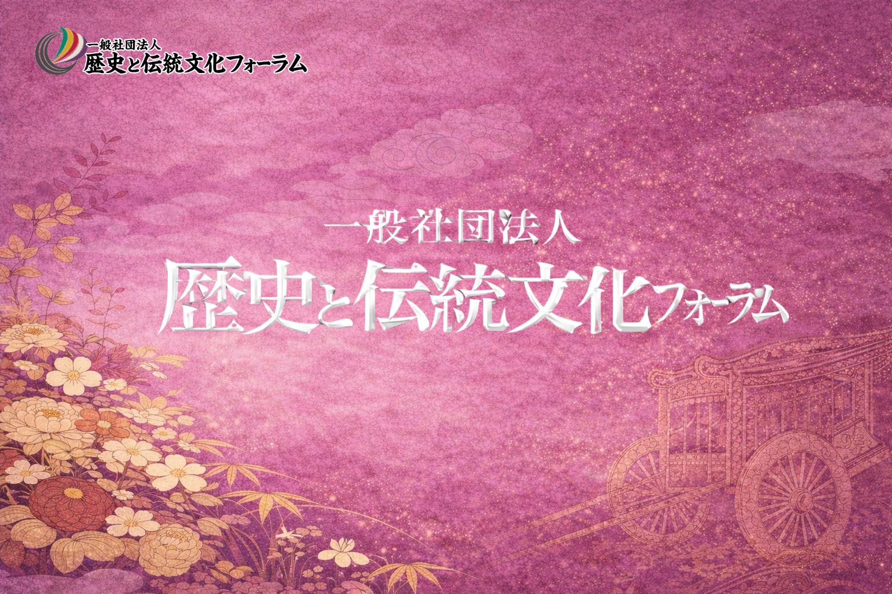
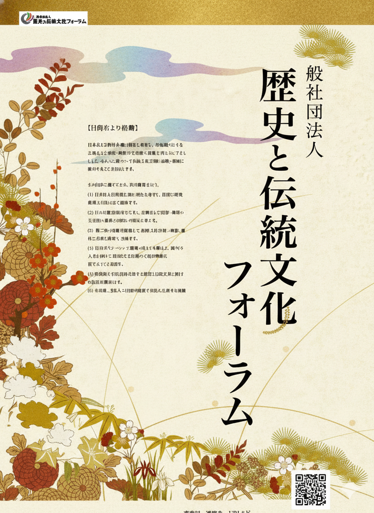

代表挨拶「フォーラムの課題」
講演：山折哲雄「親鸞九十年をどう読む」

お知らせ
6月20日 次回例会 内容変更のお知らせ
6月20日開催予定のフォーラム次回例会につきまして、内容を一部変更させていただきます。
6月に講演を予定しておりました山本講師が急なご病気のため、6月例会は、10月に予定しておりました森田講師による「江戸時代、庶民の天皇即位式拝観」と差し替えて開催いたします。
何卒ご理解、ご了承くださいますようお願い申し上げます。
ご挨拶
このたび、さまざまな分野にたずさわる人々が相集って、新たなフォーラム「一般社団法人 歴史と伝統文化フォーラム」を立ち上げました。人文学の復権と文化価値の再創造を活動の理念とします。昨今の趨勢は日本も諸外国も共にAI・IT万能の状態であり、また未来志向一辺倒のありさまです。AIも未来志向も重要であることは言を俟ちませんが、世界がこの状況にのめりこんでいることに憂慮の念を禁じ得ません。
未来志向は結構なことでありますが、人類の永年にわたる文明と文化に対する敬意と関心が剥落している現状は寒心に堪えません。AIは魅力的なものですが、その驚異的な能力に幻惑されて、人間の根源的な力である文化的な価値に対する志向と、それに裏付けられた創造力を涵養する機会を放擲してしまってはいないでしょうか。本フォーラムでは、これらの課題に取り組むことを活動の目的とし、理念としています。それはAI・ITの存在を否定するものではありません。しかしそれらを扱うものは人間であり、悠久の時を経て形成されてきたこの生命体の叡智と感性とをもって、AI・ITとのより良き共生のあり方を探究していきたく思っています。
本フォーラムにおいては、例会を年6回、会員制。講演とパフォーマンスをもって開催し、会後に懇談・懇親の場を設けます。また遠方の方のために、オンライン配信も同時に行います。 本会の趣旨に賛同いただける方々の御入会をお待ち申しています。
2026年3月1日
歴史と伝統文化フォーラム代表
笠谷 和比古
活動内容
定款記載の活動趣旨
当法人は、日本および世界各地の歴史を考究し、それら各地域に伝わる古典および有形・無形の文化財の意義を明らかにするとともに、伝統文化芸術の振興・発展に寄与することを目的とする。
その目的に資するため、次の事業を行います。
- 日本および世界各地の歴史を考究し、最新の研究成果を市民に広く提供する。
- それら歴史研究を踏まえ、古典および有形・無形の文化財の意義の深化・再発見を進める。
- 前二号の活動を踏まえて、伝統文化芸術の創造、進化の方途を探求し、実践する。
- 近年のインバウンド需要の高まりを踏まえ、国外の人々に対して、伝統文化芸術の本格的理解に資するよう努める。
- 政府および自治体に対する歴史と伝統文化に関する提言活動を行う。
- その他、当法人の目的を達成するために必要な活動を行う。
運営形態
学習と懇親、外部への発信。カルチャースクールとサロンとの混合形式で、年6回の例会を開催します。
令和8年度計画
例会は偶数月の第三土曜日（一部例外）。14時から16時半、最後の30分が懇談会です。
第一部：森田登代子「江戸時代、庶民の天皇即位式拝観」
第二部：即位式画像
第一部：進藤盛延「時代劇撮影の裏話」
第二部：浅井 誠、殺陣（たて）の実演（金曜日）
第一部：山本登郎「『伊勢物語』と平安京」
第二部：オペラ『業平Narihira』から
京都鷹峯紅葉狩り 松田泰代
第一部：小林善帆「いけ花と連歌」
第二部：連歌実作
第一部：笠谷和比古「本能寺の変、その実相」
第二部：楽劇『ガラシャ』より 光秀のモノローグ
プロフィール
山本登朗
1949年生、高槻市出身。光華女子大学・関西大学名誉教授。西京区大原野在住。専門は、『伊勢物語』をはじめとする平安時代の文学。「源氏物語を読む会」や京都アスニーで市民の皆さんと古典を読むのが楽しみ。『伊勢物語の生成と展開』(笠間書院・2017)『絵で読む伊勢物語』(和泉書院・2016)『伊勢物語事典』(花鳥社・2025)他。
進藤盛延
1960年生、京都市出身。Shinshin代表。TV・映画プロデューサー。アイエス・フィールド京都 代表。情熱の赤いバラ協会 参与（内閣府認証第一号 NPO法人）。一般社団法人武士道剣会理事。元東映株式会社京都撮影所、俳優部長兼マネージメント室長。TV「銭形平次」「遠山金四郎」「長七郎江戸日記」「水戸黄門」などを制作。
浅井 誠
1961年生、京都市出身。日本映画俳優協会常務理事。殺陣劇団「刀剣座」主宰。1979年、東映俳優養成所入所。映画監督小野登、俳優中村錦司に師事。同年「真田幸村の謀略」でデビュー。出演作品は、映画「序の舞」「夜汽車」「極道の妻たち」「将軍家光の乱心」、TV「水戸黄門」「暴れん坊将軍」「大岡越前」「長七郎江戸日記」等多数。
森田登代子
1948年生、大阪市出身。同志社大（文学 修士）、武庫川女子（家政学 博士）、NPO法人ピースポット14副理事長。『遊楽としての天皇即位式』（ミネルヴァ書房・2015）『明日へひょうひょう』（向陽書房・2004）他。近世庶民学芸文化、チベット文化圏や歌舞伎衣裳等の服飾文化の論文等。
松田泰代
1964年生、奈良市出身。同志社大学商学部卒業、京都大学大学院人間・環境学研究科修了。京都大学経済学研究所図書掛長を経て、現在、同志社大学図書館司書課程嘱託講師。主な著書: 『徳川日本のナショナル・ライブラリー』(臨川書店・2018), 「文をつなぐ人」『日本「文」学史』第2冊 (勉誠出版・2017) など。
小林善帆
1958年生、岐阜市出身。名古屋大学大学院文学研究科博士後期課程、博士（文学）学位取得。立命館大学論文博士（学術）。現在、立命館大学客員研究員。神戸女学院大学外部講師。小島頓宮法楽連歌会宗匠。主要著作 : 『「花」の成立と展開』(和泉書院・2007)、『いけ花の歴史』(吉川弘文館・2025)、「いけ花」(『花美術館』83号2023)他。
笠谷和比古
1949年生、神戸市出身。京都大学大学院文学研究科修了。国際日本文化研究センター名誉教授。ベルリン大学、北京外国語学院、パリ大学東洋言語学院などの客員教授を歴任。『関ヶ原合戦と近世の国制』(思文閣出版・2000)、『伝統文化とグローバリゼーション』(NTT出版・2009)、『近世の朝廷と武家政権』(ミネルヴァ書房・2025)他。
上村敏文
1959年生、防府市出身。筑波大学院地域研究（比較文化）修了、東洋と西洋の文化融合を模索。新作能ルター創案、楽劇ガラシャ公演団長、出演。剣道、合氣道、薫香等武藝百般を目指す。東京藝大名誉教授酒井弘、観世流職分若松健二両氏に師事。バチカン公演等に随行。愛氣自然流道主、立石神社（山口県）神主。
安田洋二
1960年生、向日市出身。写真家、映像クリエイター、儀式祭典研究家。安田フォトワーク代表。元一般社団法人日本文化保存研究所代表理事、元日本の心歌い継ぐ会幹事長、元京都芸術祭美術部門実行委員、京都西山 業平会主宰。現在、京都・奈良・滋賀を結ひ紡ぐ歴史の秘話と探索をかねた三都物語シリーズを行い、好評を博している。
亀井 健
1949年生、蒲郡市出身。10歳より芦屋・西宮在住。甲陽学院中学・高校を経て神戸大学法学部卒後西宮市役所勤務、総務局長等で定年退職後10年間西宮市代表監査委員。その後武庫川女子大学勤務を経て、現在学校法人武庫川学院評議員、他。2025年には、西宮市政百周年記念の能『西宮』の復曲・上演に参画した。
会員案内
メンバー構成
- 運営会員
- 理事らフォーラムを運営する会員
- 正会員
- 一般市民の会員。定員50名、会員番号を保有
- 協賛会員
- 東京など遠隔地にあって定期参加の困難な会員。フォーラムの趣旨への賛同者
- 随時参加者（ビジター）
- 個別の講演に対する聴講希望者
正会員
- 当フォーラムは会員制とし、一般市民からなる正会員の定員数は50名とします。
- 正会員を希望するも試聴期間を求める人は、お試し会員として遇します。
- フォーラムの講演会については、聴講希望の随時参加者を有料で認めます。原則、立ち見。
会費
正会員
会費1万円。4月中に払い込み。
お試し会員
4月、6月に各2000円を払って聴講。正会員への移行時に会員番号を付与し、既払い込み金額を差し引いた残額を支払います。
随時参加者（ビジター）
一回2000円。後部座席ないし立ち見。
途中入会者
正会員希望者は何月入会でも会費1万円を徴収。否の場合は、その年度は随時入場者として参加。
途中入会で、お試し会員を希望する方
事務煩瑣のため、途中入会でのお試し会員は不可とします。
案内チラシ
令和8年度の予定
会場、予定、会費などをまとめた案内チラシです。必要に応じて印刷物としてもご利用いただけます。

お問い合わせ
入会、例会、オンライン配信についてのお問い合わせ・お申し込みは、下記フォームからメールでお送りください。